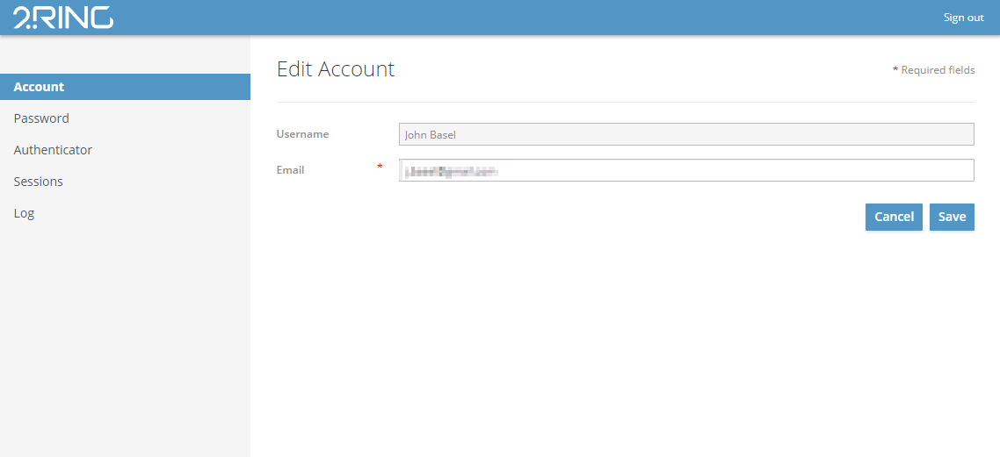
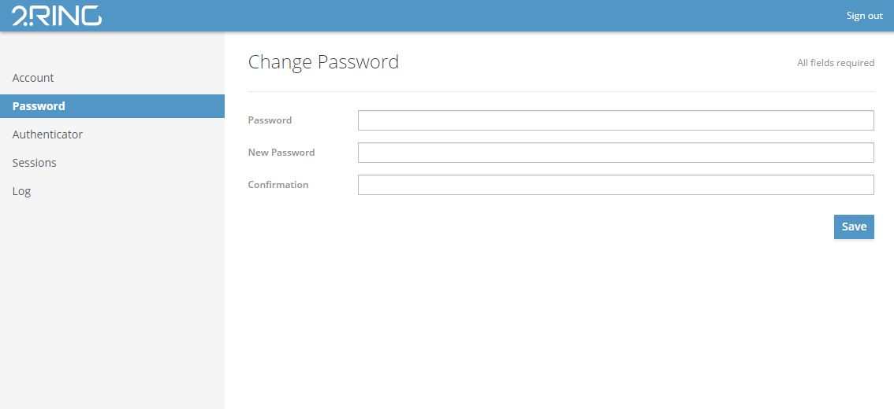
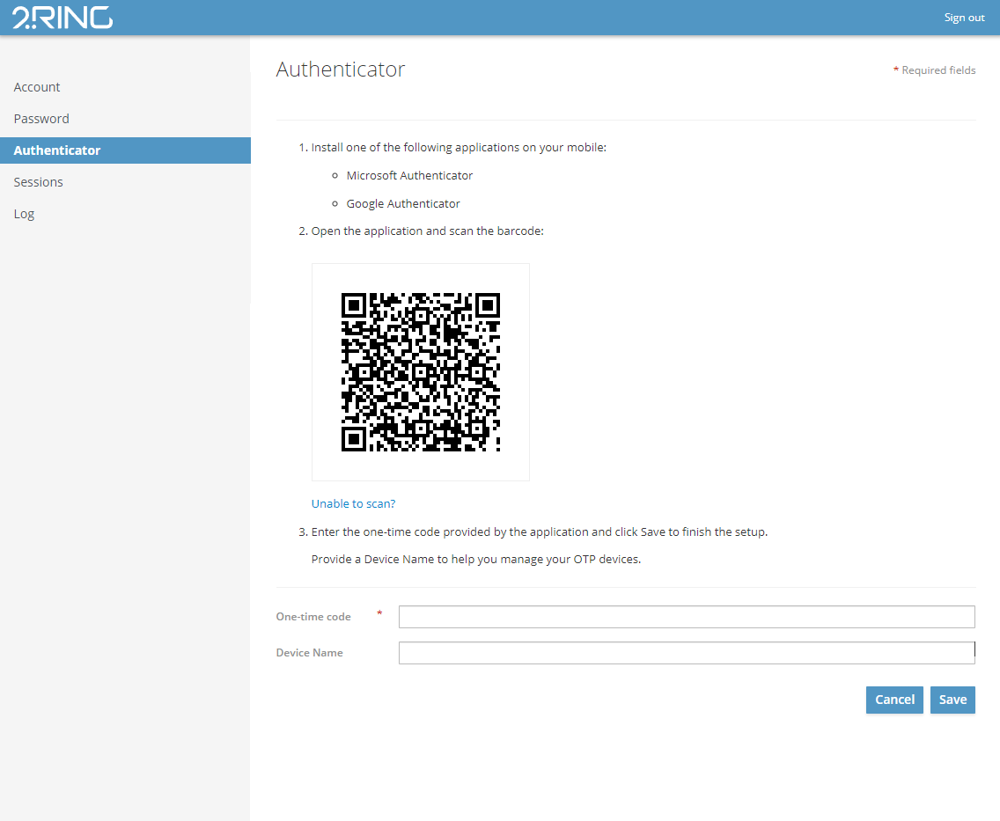
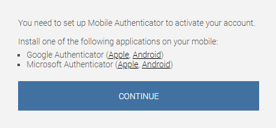
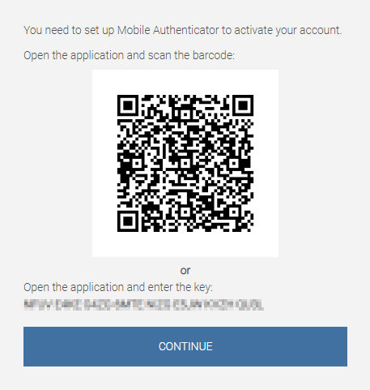
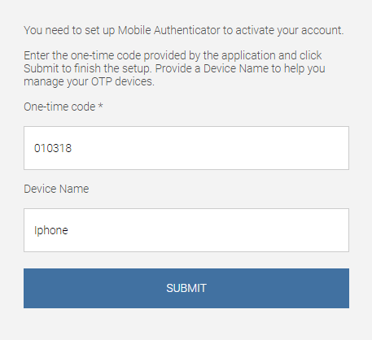
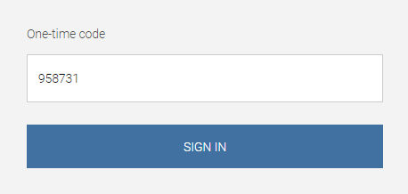
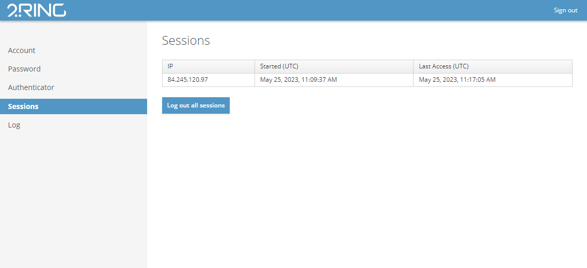
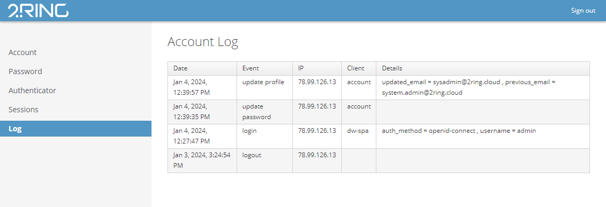

User Profile page¶
Users can edit account, password, add two-factor authentication or oversee active sessions associated with the users account in the User Profile page. To log out from the DW application, click the Sign out button located in the upper right corner of the screen.
Account¶
In the first tab, user can change his Email address. The Username field is read-only.
Password¶
In this section, user can change his password by filling the current password and the new password twice for a confirmation. Click Save to save the new password.
Authenticator¶
User can log in to DW using:
Basic authentication (username and password)
Two-factor authentication (optional)
For two-factor authentication, following applications are supported:
Microsoft Authenticator (iOS/Android)
To configure the two-factor authentication, follow the on-screen instructions.
Two-factor authentication can be configured as required for all users by default. For more information, contact 2Ring support.
If the two-factor authentication is configured as required for all users by default, every user has to follow these steps after filling the username and password on the login page:
Set up Mobile Authenticator to activate your account. Use the links to download a desired authenticator according to your operating system. When the application is succesfully installed on your mobile device, click Continue.
Open the application and scan the barcode. You can also use the provided key to continue with the authentication. Click Continue.
Enter the one-time code provided by the application and click Submit to finish the setup. Provide a Device Name to help you manage your OTP devices.
Two-factor authentication is succesfully configured. Every time you log into your account, you will be asked to provide a one-time code from the authentication application on the mobile device. After filling the code, click SIGN IN to log into your account.

Sessions¶
In this tab, you can review all active sessions associated with the users account and log out all sessions if some record looks suspicious.
Log¶
In this tab, you can review all logs regarding the account management.